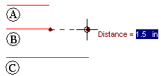

Example: Measuring the length of a line
Even when you are in the middle of a task, you can measure distances with the Measure Distance command. For example, consider the following workflow.
-
Use the Line command to draw a line (A).
-
On the Inspect tab, click the Measure Distance command and measure a distance (B).
Note:You do not need to exit the Line command before measuring a distance.
-
To exit the Measure Distance command, right-click.
The Line command is still active-you can pick up where you left off.
-
Continue using the Line command (C).
